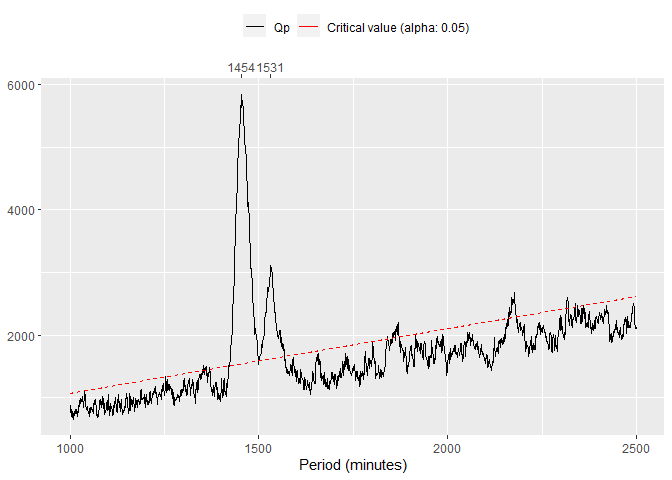
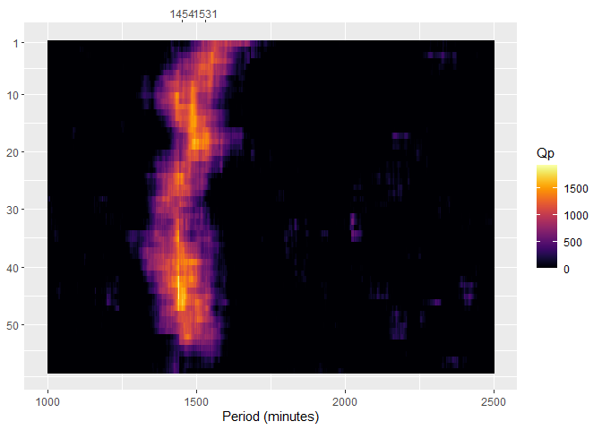
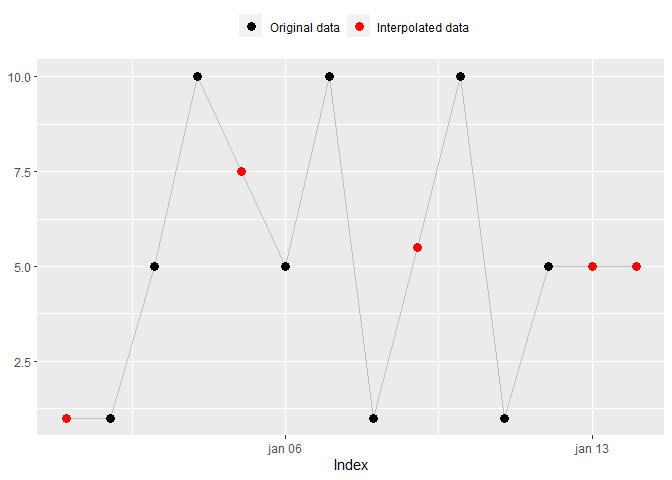

Overview
actverse is an R package that provides a complete toolkit to process, analyze and visualize actigraphy data. Its aim is to facilitate the work of sleep and chronobiology scientists with actigraphy data and to improve reproducibility in research.
actverse adheres to the tidyverse principles and integrates with the tidyverse ecosystem.
Prerequisites
You need to have some familiarity with the R programming language and with the tsibble package to use actverse main functions.
In case you don’t feel comfortable with R, we strongly recommend checking Hadley Wickham and Garrett Grolemund’s free and online book R for Data Science and the Coursera course from John Hopkins University Data Science: Foundations using R (free for audit students).
Please refer to the tsibble package documentation to learn more about it. tsibble is an essential package to deal with time series in R. We also recommend that you read the Dates and times chapter from Wickham & Grolemund’s book R for Data Science and the tsibble objects subchapter from Rob J. Hyndman & George Athanasopoulos’ book Forecasting: Principles and Practice.
Installation
You can install actverse with:
# install.packages("remotes")
remotes::install_github("giperbio/actverse")Usage
The R ecosystem has a vast number of time series standards and we had to choose one of them while developing actverse. A standard for time objects is a must, because time can have many representations and can be rooted in different numerical systems. We believe that the best time series standard available for packages that adheres to the tidyverse principles is the tsibble. As the name suggests, tsibble is an adaptation for time series of the tidyverse tibble object.
Most actverse functions will require that your data be in the tsibble standard. Adapting your data is a simple process and can make a big difference when dealing with time series in R. Please refer to tsibble documentation to learn how to do this.
We also recommend seeing the tsbox package, an R package that propose to be an “universal translator” (🖖) for R time series standards.
Read/Write
-
read_acttrust(): Read, tidy, and validate an ActTrust file. -
write_acttrust(): Adapt and write atsibbleto a readable ActTrust file.
Example:
file <- get_from_zenodo(
doi = "10.5281/zenodo.4898822", path = tempdir(),
file = "processed.txt"
)
data <- read_acttrust(file, tz = "America/Sao_Paulo")
data
#> # A tsibble: 51,806 x 17 [1m] <America/Sao_Paulo>
#> timestamp pim tat zcm orienta…¹ wrist…² exter…³ light ambie…⁴
#> <dttm> <dbl> <dbl> <dbl> <dbl> <dbl> <dbl> <dbl> <dbl>
#> 1 2021-04-24 04:14:00 7815 608 228 0 26.9 24.6 3.58 1.45
#> 2 2021-04-24 04:15:00 2661 160 64 0 27.2 25.1 5.23 2.12
#> 3 2021-04-24 04:16:00 3402 243 80 0 27.7 25.5 3.93 1.59
#> 4 2021-04-24 04:17:00 4580 317 125 0 27.9 25.8 4.14 1.68
#> 5 2021-04-24 04:18:00 2624 255 33 0 28.0 25.9 3.16 1.28
#> 6 2021-04-24 04:19:00 3929 246 105 0 28.1 26.1 3.63 1.47
#> 7 2021-04-24 04:20:00 5812 369 171 0 28.2 26.4 11.5 4.67
#> 8 2021-04-24 04:21:00 3182 270 54 0 28.4 26.7 2.4 0.97
#> 9 2021-04-24 04:22:00 6362 373 189 0 28.6 26.9 3.28 1.33
#> 10 2021-04-24 04:23:00 2621 159 64 0 28.7 27.1 2.97 1.2
#> # … with 51,796 more rows, 8 more variables: red_light <dbl>,
#> # green_light <dbl>, blue_light <dbl>, ir_light <dbl>, uva_light <dbl>,
#> # uvb_light <dbl>, event <dbl>, state <dbl>, and abbreviated variable names
#> # ¹orientation, ²wrist_temperature, ³external_temperature, ⁴ambient_lightPeriod functions
-
periodogram(): Compute Sokolove & Bushell’s χ2 periodogram. -
spectrogram(): Compute a spectrogram based on Sokolove & Bushell’s periodogram.
Example:
per <- periodogram(data, "pim")
spec <- spectrogram(data, "pim")
Data interpolation
-
na_approx()na_locf()na_overall_mean()na_overall_median()na_overall_mode()na_spline()na_weekly_mean()na_zero()na_plot(): ReplaceNAby interpolation.
Example:
x <- c(NA, 1, 5, 10, NA, 5, 10, 1, NA, 10, 1, 5, NA, NA)
index <- seq(as.Date("2020-01-01"), as.Date("2020-01-14"), by = "day")
na_approx(x, index, fill_na_tips = TRUE)
#> [1] 1.0 1.0 5.0 10.0 7.5 5.0 10.0 1.0 5.5 10.0 1.0 5.0 5.0 5.0
na_plot(x, index, na_approx(x, index, fill_na_tips = TRUE))
API clients
-
get_from_zenodo(): Get data from a Zenodo record. -
get_sun_stats(): Get sun related statistics from different APIs.
Example:
get_sun_stats(lat = -23.5489, lon = -46.6388, tz = "America/Sao_Paulo") %>%
dplyr::as_tibble() %>%
t()
#> [,1]
#> date "2023-02-21"
#> lat "-23.5489"
#> lon "-46.6388"
#> tz "America/Sao_Paulo"
#> sunrise_start "05:59:10"
#> sunrise_end "06:01:33"
#> golden_hour_end "06:29:30"
#> solar_noon "12:21:41"
#> golden_hour_start "18:13:52"
#> sunset_start "18:41:49"
#> sunset_end "18:44:11"
#> dusk "19:07:21"
#> nautical_dusk "19:34:34"
#> night_start "20:02:16"
#> nadir "00:21:41"
#> night_end "04:41:06"
#> nautical_dawn "05:08:48"
#> dawn "05:36:01"Other features
actverse also comes with many utility functions and provides free actigraphy datasets for testing and learning purposes.
All functions are properly documented, showing all the guidelines behind the computations. Click here to see a list of them.
Example:
# Find the epochs/periodicities in a 'tsibble'
read_acttrust(file, regularize = FALSE) %>%
find_epoch()
#> $best_match
#> [1] 60
#>
#> $prevalence
#> # A tibble: 4 × 2
#> epoch proportion
#> <dbl> <dbl>
#> 1 60 1.00
#> 2 94 0.0000193
#> 3 86 0.0000193
#> 4 101 0.0000193Citation
If you use actverse in your research, please consider citing it. We put a lot of work to build and maintain a free and open-source R package. You can find the actverse citation below.
citation("actverse")
#>
#> To cite {actverse} in publications use:
#>
#> Vartanian, D., Matias, V. A., Serrano, C. A. M., & Benedito-Silva, A.
#> A. (2023). {actverse}: tools for actigraphy data analysis. R package
#> version 0.0.0.9000. https://giperbio.github.io/actverse/
#>
#> A BibTeX entry for LaTeX users is
#>
#> @Unpublished{,
#> title = {{actverse}: tools for actigraphy data analysis},
#> author = {Daniel Vartanian and Vinicius {Alves Matias} and Cassio {Almeida Mattos Serrano} and Ana Amelia Benedito-Silva},
#> year = {2023},
#> url = {https://giperbio.github.io/actverse/},
#> note = {R package version 0.0.0.9000},
#> }Contributing
We welcome contributions, including bug reports.
Take a moment to review our Guidelines for Contributing.
Acknowledgments
The initial development of actverse was supported by three scholarships provided by the University of Sao Paulo (USP) (❤️).
Become an actverse supporter!
Click here to make a donation. Please indicate the actverse package in your donation message.